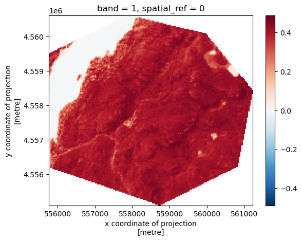
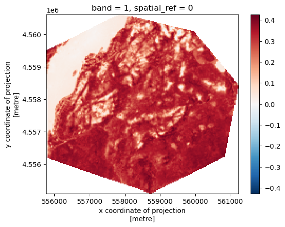
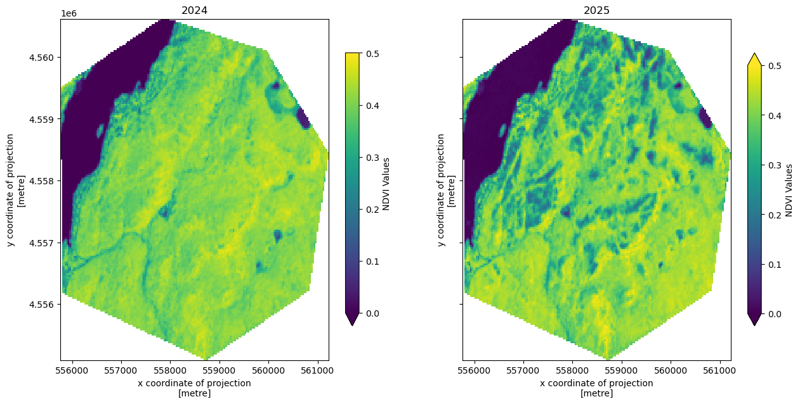
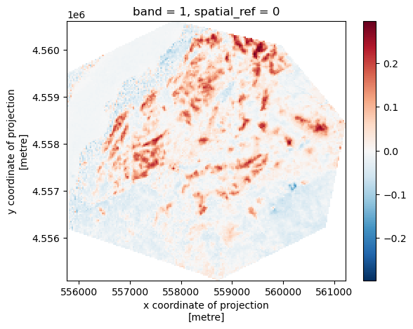
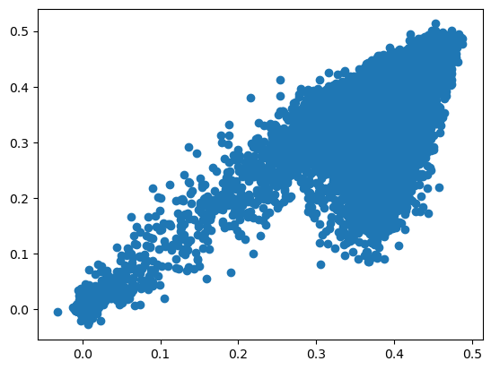

Table of Contents#
Import libraries
Read images
Subset
1. Import libraries#
# Import necessary packages
import os
from shapely.geometry import mapping
# Use geopandas for vector data and xarray for raster data
import geopandas as gpd
import xarray as xr
import rioxarray as rxr
import earthpy as et
import earthpy.spatial as es
import earthpy.plot as ep
import os
import sys
from glob import glob
import matplotlib.pyplot as plt
%matplotlib inline
C:\Users\Wenge\miniforge3\envs\sds\Lib\site-packages\earthpy\__init__.py:7: UserWarning: pkg_resources is deprecated as an API. See https://setuptools.pypa.io/en/latest/pkg_resources.html. The pkg_resources package is slated for removal as early as 2025-11-30. Refrain from using this package or pin to Setuptools<81.
from pkg_resources import resource_string
2. Open and read the polygon of the Jennings Creek Fire#
# use an approximated fire polygon
os.chdir(r'C:\Users\Wenge\Dropbox (Hunter College)\Teaching\GTECH\331&731\2025F_331&731\data\module11\JenningsCreekFire')
print(os.getcwd())
firepoly = gpd.read_file('jennings_creek_wildfire.geojson')
firepoly.crs
---------------------------------------------------------------------------
FileNotFoundError Traceback (most recent call last)
Cell In[2], line 2
1 # use an approximated fire polygon
----> 2 os.chdir(r'C:\Users\Wenge\Dropbox (Hunter College)\Teaching\GTECH\331&731\2025F_331&731\data\module11\JenningsCreekFire')
3 print(os.getcwd())
4 firepoly = gpd.read_file('jennings_creek_wildfire.geojson')
FileNotFoundError: [WinError 3] The system cannot find the path specified: 'C:\\Users\\Wenge\\Dropbox (Hunter College)\\Teaching\\GTECH\\331&731\\2025F_331&731\\data\\module11\\JenningsCreekFire'
firepoly = firepoly.to_crs(32618)
firepoly.crs
<Projected CRS: EPSG:32618>
Name: WGS 84 / UTM zone 18N
Axis Info [cartesian]:
- E[east]: Easting (metre)
- N[north]: Northing (metre)
Area of Use:
- name: Between 78°W and 72°W, northern hemisphere between equator and 84°N, onshore and offshore. Bahamas. Canada - Nunavut; Ontario; Quebec. Colombia. Cuba. Ecuador. Greenland. Haiti. Jamaica. Panama. Turks and Caicos Islands. United States (USA). Venezuela.
- bounds: (-78.0, 0.0, -72.0, 84.0)
Coordinate Operation:
- name: UTM zone 18N
- method: Transverse Mercator
Datum: World Geodetic System 1984 ensemble
- Ellipsoid: WGS 84
- Prime Meridian: Greenwich
firepoly.explore()
Make this Notebook Trusted to load map: File -> Trust Notebook
Read and subset one band#
#os.chdir(r'C:\Users\Wenge\Dropbox (Hunter College)\Teaching\GTECH\331&731\2025F_331&731\data\LC08_L2SP_014031_20241021_20241029_02_T1')
os.chdir(r'C:\Users\Wenge\Dropbox (Hunter College)\Teaching\GTECH\331&731\2025F_331&731\data\module11\LC09_L2SP_014031_20240826_20240827_02_T1')
print(os.getcwd())
cwd = os.getcwd()
# Get all surface reflectance bands
fp = glob(os.path.join(cwd,'*_B*.tif'))
print(fp[3])
print(fp[4])
red = rxr.open_rasterio(fp[3], masked=True)
#red.rio.write_crs("EPSG:32618", inplace=True)
nir = rxr.open_rasterio(fp[4], masked=True)
#nir.rio.write_crs('EPSG:32618', inplace=True)
print(red.rio.crs)
print(nir.rio.crs)
nir_cl = nir.rio.clip(firepoly.geometry.apply(mapping), firepoly.crs )
red_cl = red.rio.clip(firepoly.geometry.apply(mapping), firepoly.crs)
ndvi_2024 = (nir_cl - red_cl)/(nir_cl + red_cl)
ndvi_2024.plot()
C:\Users\Wenge\Dropbox (Hunter College)\Teaching\GTECH\331&731\2025F_331&731\data\LC09_L2SP_014031_20240826_20240827_02_T1
C:\Users\Wenge\Dropbox (Hunter College)\Teaching\GTECH\331&731\2025F_331&731\data\LC09_L2SP_014031_20240826_20240827_02_T1\LC09_L2SP_014031_20240826_20240827_02_T1_SR_B4.TIF
C:\Users\Wenge\Dropbox (Hunter College)\Teaching\GTECH\331&731\2025F_331&731\data\LC09_L2SP_014031_20240826_20240827_02_T1\LC09_L2SP_014031_20240826_20240827_02_T1_SR_B5.TIF
EPSG:32618
EPSG:32618
<matplotlib.collections.QuadMesh at 0x2a1d189fa10>

# os.chdir(r'C:\Users\Wenge\Dropbox (Hunter College)\Teaching\GTECH\331&731\2025F_331&731\data\LC09_L2SP_014031_20251016_20251017_02_T1')
os.chdir(r'C:\Users\Wenge\Dropbox (Hunter College)\Teaching\GTECH\331&731\2025F_331&731\data\module11\LC08_L2SP_014031_20250704_20250714_02_T1')
print(os.getcwd())
cwd = os.getcwd()
# Get all surface reflectance bands
fp = glob(os.path.join(cwd,'*_B*.tif'))
print(fp[3])
print(fp[4])
red = rxr.open_rasterio(fp[3], masked=True)
nir = rxr.open_rasterio(fp[4], masked=True)
swir = rxr.open_rasterio(fp[6], masked=True)
print(red.rio.crs)
red_cl = red.rio.clip(firepoly.geometry.apply(mapping), firepoly.crs)
nir_cl = nir.rio.clip(firepoly.geometry.apply(mapping), firepoly.crs)
swir_cl = swir.rio.clip(firepoly.geometry.apply(mapping), firepoly.crs)
ndvi_2025 = (nir_cl - red_cl)/(nir_cl + red_cl)
nbr = (nir_cl - swir_cl)/(nir_cl+swir_cl)
nbr.plot()
C:\Users\Wenge\Dropbox (Hunter College)\Teaching\GTECH\331&731\2025F_331&731\data\LC08_L2SP_014031_20250704_20250714_02_T1
C:\Users\Wenge\Dropbox (Hunter College)\Teaching\GTECH\331&731\2025F_331&731\data\LC08_L2SP_014031_20250704_20250714_02_T1\LC08_L2SP_014031_20250704_20250714_02_T1_SR_B4.TIF
C:\Users\Wenge\Dropbox (Hunter College)\Teaching\GTECH\331&731\2025F_331&731\data\LC08_L2SP_014031_20250704_20250714_02_T1\LC08_L2SP_014031_20250704_20250714_02_T1_SR_B5.TIF
EPSG:32618
<matplotlib.collections.QuadMesh at 0x2a180fe4690>

# Initialize subplots
fig, (ax1,ax2) = plt.subplots(ncols=2, nrows=1, figsize=(15, 7), sharey=True)
# Plot Red, Green and Blue (rgb)
ndvi_2024.plot(ax=ax1, vmin=0, vmax=0.5, # value range
cbar_kwargs={
'label': 'NDVI Values',
'orientation': 'vertical',
'shrink': 0.8, # size of colorbar
'pad': 0.05 # distance from plot
})
ndvi_2025.plot(ax=ax2, vmin=0, vmax=0.5, # value range
cbar_kwargs={
'label': 'NDVI Values',
'orientation': 'vertical',
'shrink': 0.8, # size of colorbar
'pad': 0.05 # distance from plot
})
# Add titles
ax1.set_title('2024')
ax2.set_title('2025')
Text(0.5, 1.0, '2025')

# Vegetation loss
(ndvi_2024-ndvi_2025).plot()
<matplotlib.collections.QuadMesh at 0x1e11a6f2d50>

plt.scatter(ndvi_2024.squeeze().values.flatten(), ndvi_2025.squeeze().values.flatten())
<matplotlib.collections.PathCollection at 0x2a1d195acf0>
